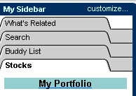

|
In this section: |
Netscape Instant Messenger is an easy way to communicate instantly with your friends who are online. You can:
[ Return to beginning of section ]
To get started quickly, use the Instant Messenger Setup screens.
[ Return to beginning of section ]
When you set up Instant Messenger for the first time using the Instant Messenger Setup screens, you register and select a screen name and password. In subsequent Instant Messenger sessions, you can register multiple screen names to use with the Netscape Instant Messenger service.
To register and select a new screen name and password:
[ Return to beginning of section ]
Before you can use Instant Messenger to send a message or to chat, you need to start the program and sign on.
To start and sign on to Netscape Instant Messenger:
Tip: If you want Netscape Instant Messenger to start when you start Netscape 6, select "Sign on at launch" on the sign-on screen.
[ Return to beginning of section ]
If you have registered multiple screen names, you can sign on with the name of your choice. To sign on with a new screen name that you have registered:
[ Return to beginning of section ]
You can set preferences for Instant Messenger to meet your particular needs.
If you have previously used AOL Instant Messenger, and you have installed Netscape 6 on your machine, you will have to select your preferences again. Preferences, unlike Buddy Lists, do not transfer automatically from AOL Instant Messenger to Netscape 6.
You can set preferences for such things as:
You set your preferences using the Instant Messenger Preferences panels. To access the panels:
[ Return to beginning of section ]
If you access the Internet through an Internet Service Provider, you most likely will not need to make any changes to the Connection preferences panel. If you access the Internet through a local area network firewall (for example, at your workplace), then your network administrator may need to configure the proxy section of the Connection preferences panel.
Here are descriptions of the items in the Connection panel:
Server Host
This field contains the default Internet address of the Netscape Instant Messenger server. Under normal circumstances, you do not need to change this field. If your proxy server needs to resolve the host name, you may need to put the IP address instead of the name of the server in this field.
Server Port
This field contains the default server port number to be used on the Netscape Instant Messenger server. Under normal circumstances, you do not need to change this field.
Connect using proxy
If you click this button, the Netscape Instant Messenger software activates the proxy server controls.
Proxy Server Host
Supply the name of the proxy server.
Proxy Server Port
Supply the port number to be used on the proxy server.
Protocol
Specify whether your proxy server uses the SOCKS 4, SOCKS 5, or HTTPS protocol.
Authentication Username
Supply the authentication username required by the proxy.
Authentication Password
Supply the authentication password required by the proxy.
[ Return to beginning of section ]
This section explains how to use and customize the buddy list.
|
In this section: Deleting Buddies and Buddy Groups |
When you sign on to Instant Messenger, your Buddy List appears. Three groups are automatically created for you in your Buddy List window: Buddies, Family, and Co-Workers. Add your buddies to any of these groups or create additional groups.
There are two tabs in your Buddy List: List Setup and Online.
In the List Setup tab:
In the Online tab:
Tip: Buddy lists are stored on a server rather than on your computer. That means you can access your buddy lists from anywhere, whenever you sign on to the Netscape Instant Messenger service.
[ Return to beginning of section ]
If you know a friend's screen name, you can add him or her to your Buddy List immediately.
If you don't know a friend's screen name, Instant Messenger can help you locate your friend using his or her email address.
[ Return to beginning of section ]
You can group your buddies to organize your buddy list. Your list comes with three pre-set groups: Buddies, Family, and Co-Workers.
To create a new group:
To add a new buddy, follow the steps under Adding and Finding Buddies.
To open or close a group's folder, click the right triangle next to the folder. Or, select the name of the group to highlight it and press Enter.
[ Return to beginning of section ]
To remove a buddy or a group:
[ Return to beginning of section ]
If you use the Sidebar feature of Netscape 6, then you may find it convenient to include your buddy list in a Sidebar tab.
If it is not already open, open the Sidebar by clicking on its handle.
The Sidebar Buddy List may be closed, so that only its header is
showing. To open it, click the tab on which the words Buddy List appear.

The Sidebar Buddy List lets you know when one of your buddies is online and available for a chat, even if Netscape Instant Messenger is not open.
If your buddy is online, his or her name appears in your buddy
list. If your buddy is idle, his or her name is dimmed and a small clock
icon appears next to the name. 
To send an instant message:
Tip: On Windows and Linux systems, you can right-click a name and choose to send an instant message or a chat invitation. On Mac OS systems, use Control-click.
To add or remove buddies, click the List Setup tab to add buddies or create buddy groups.
[ Return to beginning of section ]
To find out which of your buddies is online, click the Online tab in the Buddy List. If you also keep your Buddy List displayed in the Sidebar, you can check there to see who's online.
You cannot see which of your buddies is online when you have the List Setup tab displayed. Click the Online tab.
In the Online tab:
In Netscape Mail:
You can also find out which of your buddies is online from within Netscape Mail. If a buddy is online, a presence icon appears next to his or her name in a message window, in the To, From, or CC fields. This icon also appears next the names of non-buddies. Non-buddies are Instant Messenger users who you have not added to your buddy list. For both buddies and non-buddies, the presence icon will show only for those users who have registered and confirmed their registration.
The presence icon next to a buddy's name disappears when he or she logs on or off. The presence icon does not change next to a non-buddy's name.
[ Return to beginning of section ]
If you have used a previous version of AOL Instant Messenger, you can transfer your buddy list.
[ Return to beginning of section ]
|
In this section: Conducting Multiple Conversations |
Follow these steps to create and send an instant message:
Tip: On Windows and Linux systems, you can right-click a name and choose to send an instant message or a chat invitation. On Mac OS systems, use Control-click.
You see your message in the top frame of the message window. Your buddy's response will also appear in the top pane. You can continue typing and sending messages as long as you and your buddy want to converse.
[ Return to beginning of section ]
Netscape Instant Messenger lets you customize your instant messages with special fonts, colors, and styles:
[ Return to beginning of section ]
To add a hyperlink to a message, type the full URL as text (for example, http://www.aol.com or mailto:johndoe@aol.com). The text automatically converts to a hyperlink when you send the message.
[ Return to beginning of section ]
To decorate a message with "smilies" (emoticons):

If you cannot see the smiley, make sure the "Disable graphical smiles"
preference is not selected.
[ Return to beginning of section ]
You can carry on as many separate conversations as you wish. A separate message window appears for each conversation.
[ Return to beginning of section ]
You can easily use Instant Messenger from within Netscape Mail to correspond quickly with friends and colleagues. If an Instant Messenger user sends you a message and he or she is online, a presence icon (the Instant Messenger running man) appears next to his or her email address in the envelope of the message. The icon appears in the To, From, or CC fields for anyone who is a registered, confirmed Instant Messenger user and who is online. (You must be signed on to the Instant Messenger service to see these icons.) To send him or her an instant message, right-click (Control-click on the Mac OS) on the user's name or email address and choose Send Instant Message from the pop-up menu.
[ Return to beginning of section ]
A conversation ends when both parties stop sending instant messages. If the other person continues to send messages after you have closed the message window, you will continue to receive message notifications, unless you block that person from sending you messages. To close the message window, click the close box or open the File menu and choose Close.
To sign off from Instant Messenger, open the File menu and choose "Sign Off" (you are signed off from Instant Messenger, but the sign-on window remains open) or "Sign Off and Close."
[ Return to beginning of section ]
The Netscape Instant Messenger Chat feature lets you exchange messages with several of your buddies in your own private chat rooms.
|
In this section: Conducting Multiple Chat Sessions |
To invite a buddy to chat:
The Buddy Chat Invitation window opens. If you want to send the invitation to additional buddies, type their screen names in the Screen Names to Invite field, separated by commas.
After your buddy accepts your invitation, Netscape Instant Messenger displays a message indicating your buddy has entered the room. You can start typing your chat messages in the text area after you receive the notification.
You can invite a buddy to join a chat in progress. To do so, click the Invite button on the toolbar in the Chat window.
[ Return to beginning of section ]
To send a chat message:
When you are finished with your chat conversation, you can click Save in the Chat window toolbar to save the conversation to a file.
[ Return to beginning of section ]
Netscape Instant Messenger lets you customize your chat messages with special fonts, colors, and styles:
[ Return to beginning of section ]
To add a hyperlink to a chat message, type the full URL as text (for example, http://www.aol.com or mailto:johndoe@aol.com). The text automatically converts to a hyperlink when you send the chat message.
[ Return to beginning of section ]
You can carry on as many separate chat sessions as you wish. A separate chat window appears for each conversation.
[ Return to beginning of section ]
To stop receiving messages from one or more people in the chat room:
Once you've clicked Ignore, you won't see any messages from those people whose screen names you selected. However, others in the chat room will continue to see the messages of those people.
[ Return to beginning of section ]
A chat ends when all parties stop sending instant messages. To close the chat window, click the close box or open the File menu and choose Close.
To sign off from Instant Messenger, open the File menu and choose "Sign Off" (you are signed off from Instant Messenger, but the sign-on window remains open) or "Sign Off and Close."
[ Return to beginning of section ]
If you need to step away from your computer but do not want to sign off, you can use an Away message to let others know that you are temporarily unavailable.
For planned absences, you can turn on your Away message to let others know when you will be back. Netscape Instant Messenger displays this message when anyone requests information about you and automatically replies with your Away message to anyone who sends you a message while you are away.
|
In this section: |
To create a new Away message:
Netscape Instant Messenger adds your new message to your list of Away messages.
[ Return to beginning of section ]
To turn an Away Message on or off:
[ Return to beginning of section ]
To delete an Away message:
[ Return to beginning of section ]
If someone else using Instant Messenger sends you annoying or offensive messages, you can permanently block the person from sending messages to you.
You can also set privacy preferences to control which users can send you messages, and how much information about you other Instant Messenger users can have.
|
In this section: |
Instant Messenger lets you control who can send you messages, and how much information about you other users can have.
[ Return to beginning of section ]
You can block one or more users so they can't send you messages. This feature is useful if you want to block users who send offensive messages or if you simply do not want to receive messages for a while.
To remove someone from the block list, click his or her screen name, then click Remove.
[ Return to beginning of section ]
If someone else using the Netscape Instant Messenger service sends you annoying or offensive messages, you have two ways to respond. You can issue a warning to the person or you can block the person.
|
In this section: |
To warn a user who has sent you an offensive message, click Warn in the Instant Message window in which you received the message.
Warn imposes a warning on the sender, hampering that person's ability to send and receive messages. With frequent warnings, the user will not be able to exchange any messages with anyone. Only after a “cooling off” period can that user send and receive messages again.
When you click Warn, you can choose to impose the warning anonymously. Anonymous warnings are less severe and the user you are warning won't know who issued the warning.
Regarding warnings you send and receive:
[ Return to beginning of section ]
You can see someone’s warning level next to the person's screen name in your Buddy List window.
Alternatively, you can permanently block one or more people from sending you messages. See "Blocking a User" for more information.
[ Return to beginning of section ]
10/12/00
Copyright © 1994-2000 Netscape Communications Corporation.